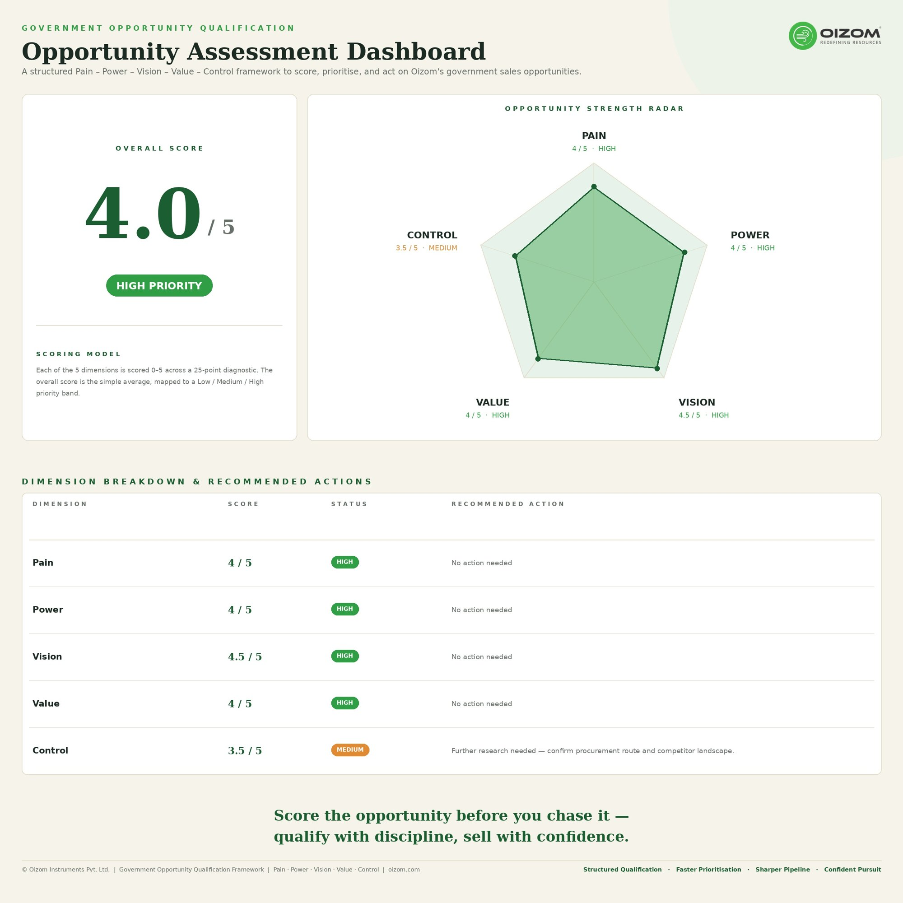
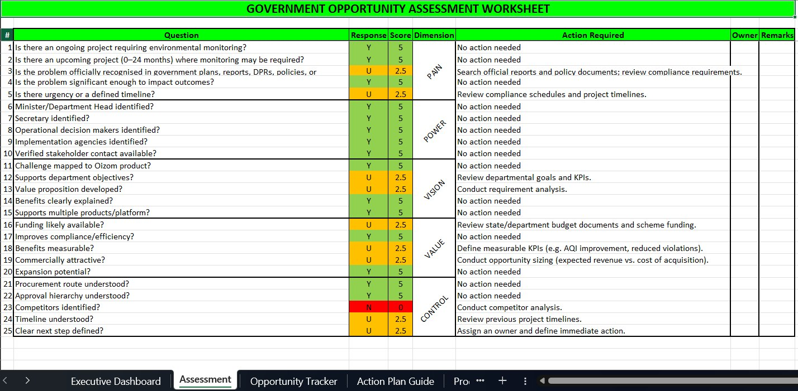

PPVVC Government Opportunity Qualification Framework
Pain – Power – Vision – Value – Control: a five-part lens for qualifying and prioritising government opportunities.


01Overview
PPVVC is a five-part qualification lens designed during the Oizom internship to judge which government opportunities deserve sales effort first.
Pain
Understand the department's existing challenges and requirements.
Power
Identify decision-makers, influencers and stakeholders.
Vision
Understand the department's desired future outcomes.
Value
Evaluate the commercial and operational value of the proposed solution.
Control
Assess procurement readiness, decision processes, timelines and implementation considerations.
02Business challenge
With 1,789+ department–product opportunities identified, the team needed a consistent way to separate high-value, actionable leads from those unlikely to progress.
03How it prioritises opportunities
- Pain and Vision show whether there is a real, mandated need and a clear target outcome.
- Power confirms that the right officers and influencers are known.
- Value tests whether the solution is worth it commercially and operationally.
- Control checks procurement readiness and timelines, separating opportunities that can move now from those to nurture.
04The assessment worksheet
The framework is built as a workbook: 25 yes / unknown / no questions, five for each dimension. Every gap comes with a specific next step, so the assessment doubles as an action plan for the sales team.


Try the worksheet
Pain
Power
Vision
Value
Control
Overall = average of the five dimensions. 4.0 or more is high priority, 3.0 or more is medium, below 3.0 is low.
Recommended actions
05Where it was applied
Used to qualify and prioritise public-sector targets within the government department opportunity mapping project, alongside an opportunity tracker (state, department, product, stage, value, probability and next action).